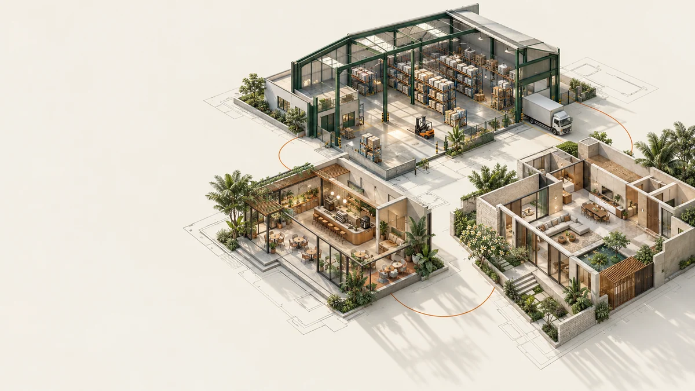
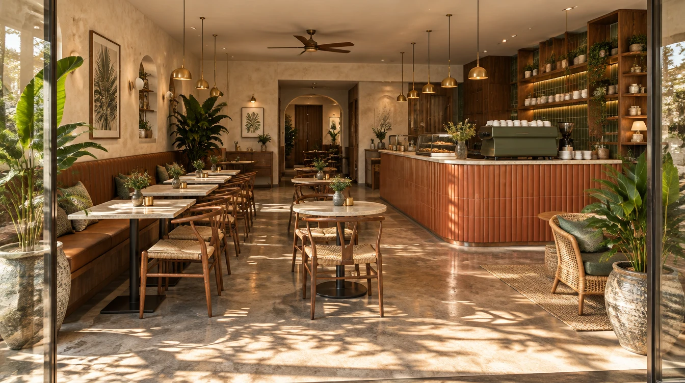
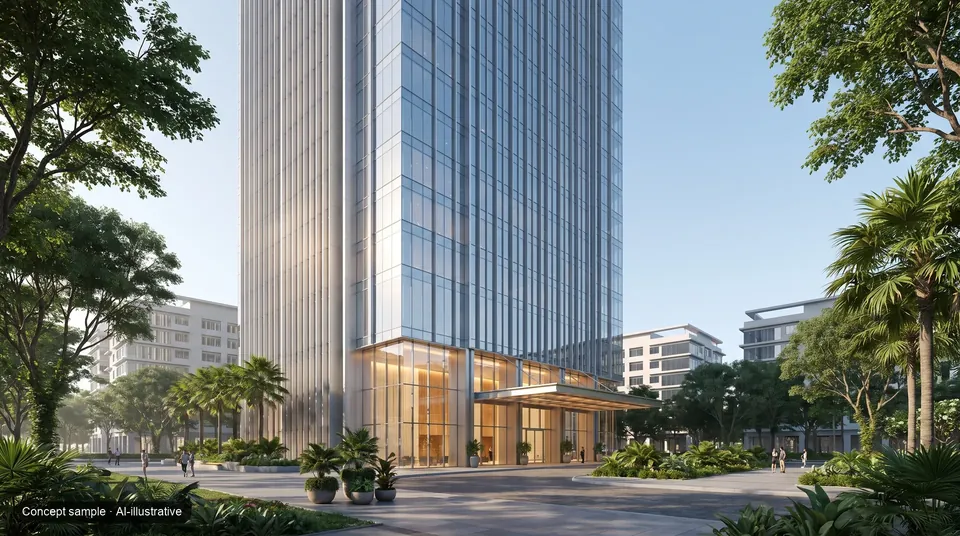
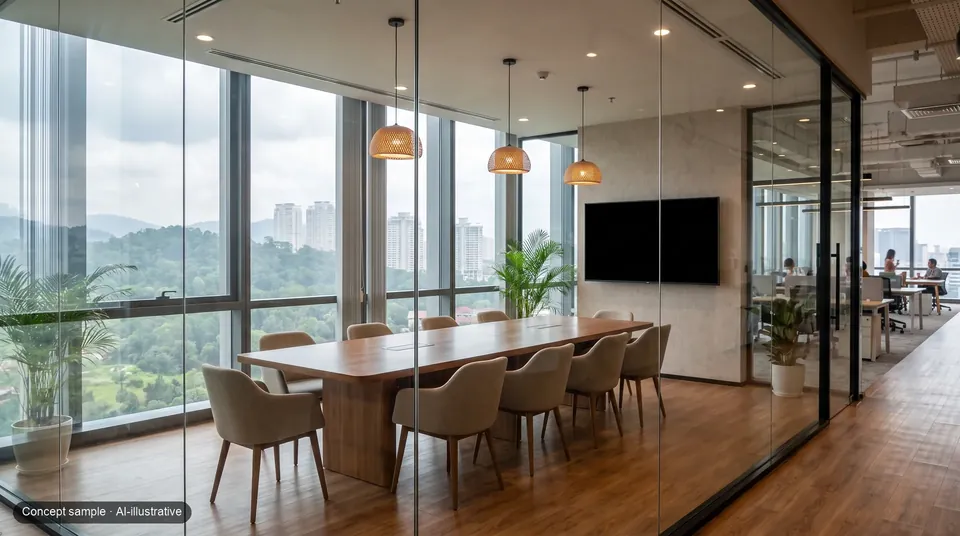
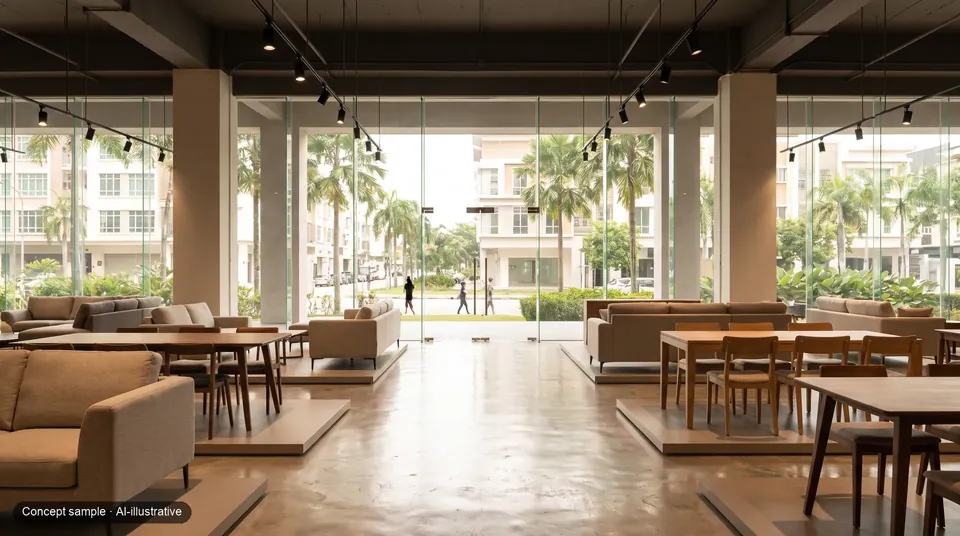
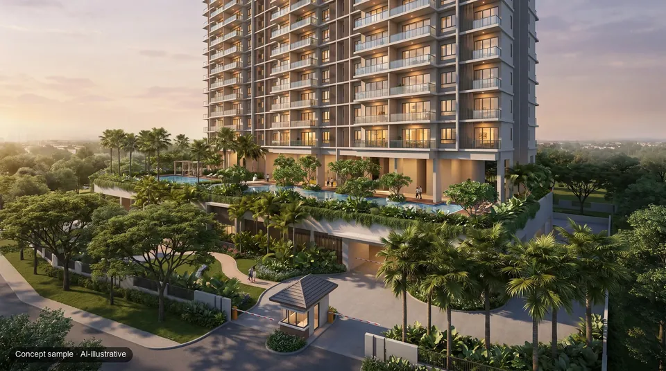
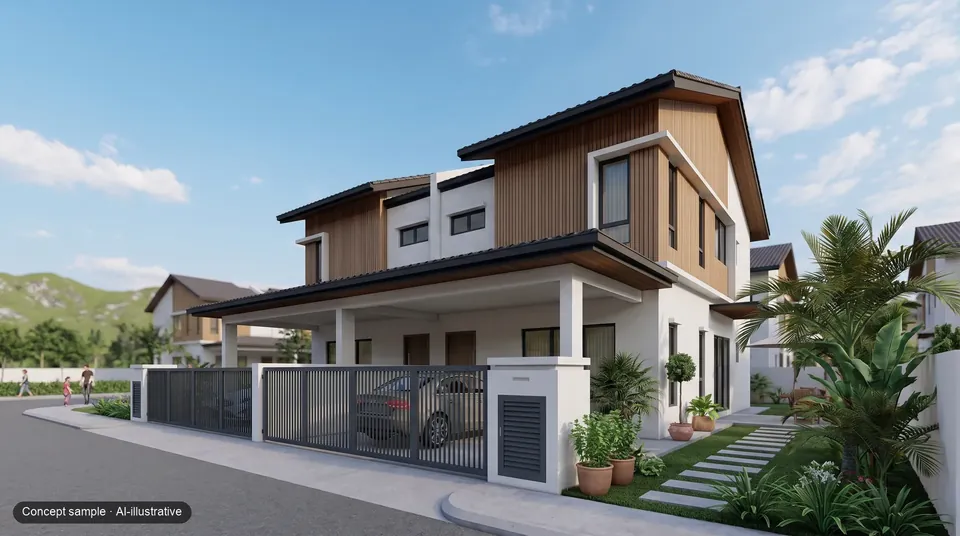
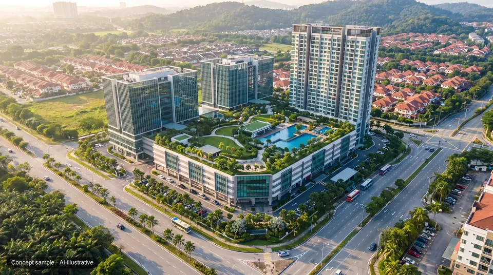

Industrial
Factories and warehouses. Explore a drawing-built demonstration and possible fit-outs.
Explore Industrial →Digital twins for real estate, starting with factories and warehouses.
Turn your building plans into a space people can explore.
A 20-minute call. No drawings needed.

IDYRA / SPACES
Factories and warehouses. Explore a drawing-built demonstration and possible fit-outs.
Explore Industrial →
Cafés, retail, fashion and offices. Make your next space easier to picture.
Explore Commercial →
A home you can explore before deciding on its look and layout.
Explore Home →01 / Experience the digital twin
One building. From its original plan to a possible fit-out. Drag, explore and find your perspective.

 As per plan
Logistics fit-out
As per plan
Logistics fit-out

Loads here · about 1.5 MB
Talk through the model on a free 20-minute demo call.
WhatsApp about the modelChoose a state or tool to open the model.
Interim 3D model. It opens outside, as per plan, with illustrative people switched off. A desktop is recommended for detailed viewing; initial loading can take longer on a phone. Its lighting differs from the rendered stills.
Native camera moves through the drawing-built model. Every shot is labelled; fit-out is illustrative. No AI-animated footage.
Demonstration project, not client work, not offered for sale or rent through Idyra. Building plans submitted, not yet approved. 28,158 sq ft gross floor area. Model, not as-built or a survey. Uses depend on the land title and planning approval. Explore the case study ↗
IDYRA / INDUSTRIAL

The building before an illustrative fit-out.
Explore the empty buildingRacking and loading ideas within the same demonstration building.
Explore the warehouse layout
Assembly and quality-control ideas within the same demonstration building.
Explore the production layoutEXPLORE THE EVIDENCE
Open the models, compare the options and see what a presentation can include.
Industrial, café and home. Explore each in your browser.
Choose a demo → 2Switch between café and communal layouts in Ruang 140.
Try the café → 7Explore the courtyard, living spaces and rooms from saved views.
Explore the home → 10Inspect the industrial demonstration, with matching plan views for its illustrative fit-outs.
View the renders →These figures describe our demonstrations, not customer results. The café and home are original fictional concepts.
Built for your next presentation
We turn building plans into interactive 3D presentations, rendered visuals and shareable project files. For factories, warehouses and property teams.
Walk through the space in a browser. Switch between the plan and an illustrative fit-out. Try it in the working demo.

Show an industrial space with stills, matching as-per-plan views and a vertical video. Walkthrough film is an add-on.
Bring the model, referenced spec sheet and agreed media together. Receive browser-ready files and handover instructions.
Demonstration drawing set · submitted, not yet approved
One demonstration project, not client work. Rendered stills and the browser model use different rendering methods. Hosting and access are agreed separately.
Services and budget guide02 / A different perspective
The factory hall, office block and office interior of Demonstration project. Three views of one demonstration project.
Factories & warehouses
Explore the hall, loading bays and possible working layouts before a site visit.
Demonstration project · Factory hall. Drawing-built render; logistics fit-out illustrative.Demonstration project · Factory hall. Motion added by AI to our drawing-built render. People, vehicles and fit-out are illustrative; measurements come from the drawings, not from this clip.
Explore this twin ↗Commercial buildings
Understand the arrival, the yard and how the office block sits on its site.
Demonstration project · The office block and its site, from the same project, not a separate commission. Drawing-built render; fit-out illustrative.Demonstration project · The office block and its site, from the same project, not a separate commission. Motion added by AI to our drawing-built render. Vehicles, cloud shadows and fit-out are illustrative; measurements come from the drawings, not from this clip.
See the case study ↗
Office interiors
See how desks, meeting spaces and reception could come together inside the building's geometry.
Demonstration project · Meeting room from the same project. Furniture and fit-out illustrative.Demonstration project · Meeting room from the same project. Motion added by AI to our drawing-built render. Furniture and fit-out are illustrative; measurements come from the drawings, not from this clip.
View the interiors ↗Demonstration project, not client work, not offered for sale or rent through Idyra.
Meet Idyra
See what we do in a short introduction, then explore a realistic visual concept. For a model of your actual building, we start with its plans and an agreed brief.
Explore the working demoThe presenter and concept are AI-generated. Our drawing-built demonstration and interactive model are above.
Help clients understand your factory before they visit. Idyra turns building plans into interactive three-dimensional presentations. Start with a free project review at idyra.ai.
A moving view through an imagined warehouse with racks, loading areas and warm daylight. On-screen Bahasa Melayu invites viewers to explore their space in 3D and contact Idyra.
AI-illustrative · not drawing-built
We start with factories and warehouses, modelled from their drawings. These AI concept samples show how other property types could be presented.






03 / We build it for you
Tell us what you need to explain. We handle the modelling and prepare a private preview for you to review.
Share the property type, town, approximate size, audience and target date. Start with a free 20-minute discussion; no drawings needed.
After the order is signed and drawing permission is in place, send the plans. We agree a delivery date, build the model and include one revision round.
Receive the agreed model, spec sheet and share-page files. Showroom adds stills and video. Hosting is agreed separately in the order.
Our method, demonstrated.
20 of 20 random dimensions within 0.1 m; all 103 checks passed (101 dimensions, 2 counts). Model checks, not a survey.
04 / Bring your space into view
A simple twin or a complete showroom. We build it for you, with a private preview before you share.
The interactive foundation
A to-scale model, one fit-out preset, a spec sheet and a share page. Hosting agreed in the order form.
Industrial or commercial · up to 25,000 sq ft gross floor area
Founding offer: RM1,900, subject to availability and eligibility, with case-study permission agreed separately in writing.
Explore services and request a quote ↗The visual presentation
The twin, 8 path-traced stills plus their as-per-plan views, and a 20–30 s vertical video. Two agent links for WhatsApp enquiries.
Industrial · up to 25,000 sq ft at this guide price
Founding offer from RM4,450 includes 6 stills instead of 8. Availability, eligibility and separate case-study permission are confirmed in writing.
Explore Showroom ↗Founding pilot: we confirm the delivery date after inspecting your drawings; one active job at a time.
For existing buildings, what was built can differ from the drawings. We're setting up an on-site check of key dimensions; until then, ask us before ordering.
Free discussions and quotes are open now. We confirm production availability and payment arrangements in your written order. Package scope, founding offers and tax treatment are on the packages page.
05 / Who we are
Idyra is run by a team of AI agents. Our founder, based in Kuala Lumpur, reviews every job before delivery and is accountable for it.
Emailhello@idyra.ai Or message us on WhatsApp, +60 12-250 5150.
Company detailsIdyra (IDYRA DIGITALS STUDIO, SSM business registration no. 202603265130 (RA0140172-M)) is a Malaysian sole proprietorship with its registered business address in Kuala Lumpur, working across Selangor and the Klang Valley.
Free / 20-minute demo call
We'll show our labelled sample and explain which drawings a Plan Twin needs.
Please don't send us drawings before an order form is signed. We don't record the call.
Kuala Lumpur, Malaysia · +60 12-250 5150